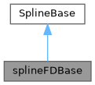
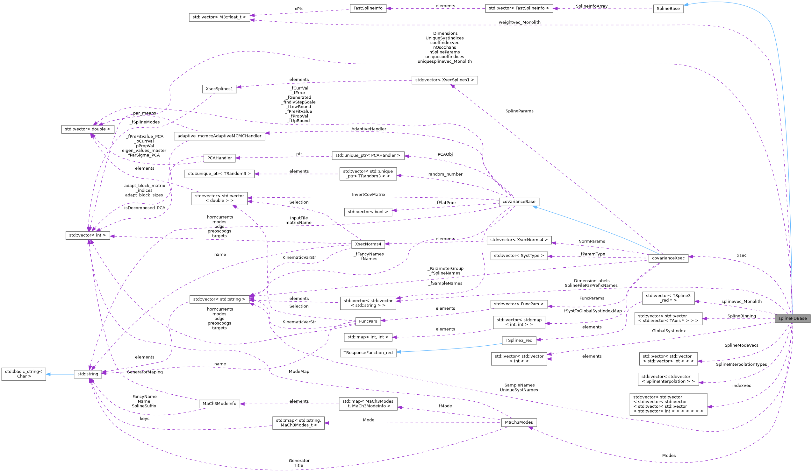

|
MaCh3 1.4.5
Reference Guide
|
Loading...
Searching...
No Matches
|
MaCh3 1.4.5
Reference Guide
|
Bin-by-bin class calculating response for spline parameters. More...
#include <splines/splineFDBase.h>


Public Member Functions | |
| splineFDBase (covarianceXsec *xsec_, MaCh3Modes *Modes_) | |
| Constructor. | |
| virtual | ~splineFDBase () |
| Destructor. | |
| void | Evaluate () |
| CW: This Eval should be used when using two separate x,{y,a,b,c,d} arrays to store the weights; probably the best one here! Same thing but pass parameter spline segments instead of variations. | |
| void | AddSample (const std::string &SampleName, const std::vector< std::string > &OscChanFileNames, const std::vector< std::string > &SplineVarNames) |
| add oscillation channel to spline monolith | |
| void | TransferToMonolith () |
| flatten multidimensional spline array into proper monolith | |
| void | cleanUpMemory () |
| Remove setup variables not needed for spline evaluations. | |
| virtual void | FillSampleArray (std::string SampleName, std::vector< std::string > OscChanFileNames) |
| Loads and processes splines from ROOT files for a given sample. | |
| std::vector< std::vector< int > > | StripDuplicatedModes (std::vector< std::vector< int > > InputVector) |
| Check if there are any repeated modes. This is used to reduce the number of modes in case many interaction modes get averaged into one spline. | |
| std::vector< std::vector< int > > | GetEventSplines (std::string SampleName, int iOscChan, int EventMode, double Var1Val, double Var2Val, double Var3Val) |
| Return the splines which affect a given event. | |
| std::vector< TAxis * > | FindSplineBinning (std::string FileName, std::string SampleName) |
| Grab histograms with spline binning. | |
| int | CountNumberOfLoadedSplines (bool NonFlat=false, int Verbosity=0) |
| std::string | getDimLabel (const int BinningOpt, const unsigned int Axis) const |
| int | getSampleIndex (const std::string &SampleName) const |
| Get index of sample based on name. | |
| bool | isValidSplineIndex (const std::string &SampleName, int iSyst, int iOscChan, int iMode, int iVar1, int iVar2, int iVar3) |
| Ensure we have spline for a given bin. | |
| void | BuildSampleIndexingArray (const std::string &SampleName) |
| void | PrepForReweight () |
| void | getSplineCoeff_SepMany (int splineindex, M3::float_t *&xArray, M3::float_t *&manyArray) |
| void | PrintBinning (TAxis *Axis) const |
| void | PrintSampleDetails (const std::string &SampleName) const |
| Print info like Sample ID of spline params etc. | |
| void | PrintArrayDetails (const std::string &SampleName) const |
| const M3::float_t * | retPointer (const int sample, const int oscchan, const int syst, const int mode, const int var1bin, const int var2bin, const int var3bin) const |
| get pointer to spline weight based on bin variables | |
 Public Member Functions inherited from SplineBase Public Member Functions inherited from SplineBase | |
| SplineBase () | |
| Constructor. | |
| virtual | ~SplineBase () |
| Destructor. | |
| virtual void | Evaluate ()=0 |
| CW: This Eval should be used when using two separate x,{y,a,b,c,d} arrays to store the weights; probably the best one here! Same thing but pass parameter spline segments instead of variations. | |
| virtual std::string | GetName () const |
| Get class name. | |
| short int | GetNParams () const |
| Get number of spline parameters. | |
Protected Types | |
| enum | TokenOrdering { kSystToken , kModeToken , kVar1BinToken , kVar2BinToken , kVar3BinToken , kNTokens } |
Protected Member Functions | |
| void | CalcSplineWeights () override |
| CPU based code which eval weight for each spline. | |
| void | ModifyWeights () override |
| Calc total event weight, not used by Bin-by-bin splines. | |
| virtual std::vector< std::string > | GetTokensFromSplineName (std::string FullSplineName)=0 |
| Protected Member Functions inherited from SplineBase | |
| void | FindSplineSegment () |
| CW:Code used in step by step reweighting, Find Spline Segment for each param. | |
| virtual void | CalcSplineWeights ()=0 |
| CPU based code which eval weight for each spline. | |
| virtual void | ModifyWeights ()=0 |
| Calc total event weight. | |
| void | getTF1Coeff (TF1_red *&spl, int &nPoints, float *&coeffs) |
| CW: Gets the polynomial coefficients for TF1. | |
Protected Attributes | |
| covarianceXsec * | xsec |
| Pointer to covariance from which we get information about spline params. | |
| std::vector< std::string > | SampleNames |
| std::vector< int > | Dimensions |
| std::vector< std::vector< std::string > > | DimensionLabels |
| std::vector< int > | nSplineParams |
| std::vector< int > | nOscChans |
| std::vector< std::vector< std::vector< TAxis * > > > | SplineBinning |
| std::vector< std::vector< std::string > > | SplineFileParPrefixNames |
| std::vector< std::vector< std::vector< int > > > | SplineModeVecs |
| std::vector< std::vector< int > > | GlobalSystIndex |
| This holds the global spline index and is used to grab the current parameter value to evaluate splines at. Each internal vector will be of size of the number of spline systematics which affect that sample. | |
| std::vector< std::vector< SplineInterpolation > > | SplineInterpolationTypes |
| spline interpolation types for each sample. These vectors are from a call to GetSplineInterpolationFromSampleID() | |
| std::vector< std::string > | UniqueSystNames |
| name of each spline parameter | |
| std::vector< int > | UniqueSystIndices |
| Global index of each spline param, it allows us to match spline ordering with global. | |
| std::vector< std::vector< std::vector< std::vector< std::vector< std::vector< std::vector< int > > > > > > > | indexvec |
| Variables related to determined which modes have splines and which piggy-back of other modes. | |
| std::vector< int > | coeffindexvec |
| std::vector< int > | uniquecoeffindices |
| Unique coefficient indices. | |
| std::vector< TSpline3_red * > | splinevec_Monolith |
| holds each spline object before stripping into coefficient monolith | |
| int | MonolithSize |
| int | MonolithIndex |
| int | CoeffIndex |
| bool * | isflatarray |
| Need to keep track of which splines are flat and which aren't. | |
| M3::float_t * | xcoeff_arr |
| x coefficients for each spline | |
| M3::float_t * | manycoeff_arr |
| ybcd coefficients for each spline | |
| std::vector< M3::float_t > | weightvec_Monolith |
| Stores weight from spline evaluation for each single spline. | |
| std::vector< int > | uniquesplinevec_Monolith |
| Maps single spline object with single parameter. | |
| MaCh3Modes * | Modes |
| pointer to MaCh3 Mode from which we get spline suffix | |
| Protected Attributes inherited from SplineBase | |
| std::vector< FastSplineInfo > | SplineInfoArray |
| short int * | SplineSegments |
| float * | ParamValues |
| Store parameter values they are not in FastSplineInfo as in case of GPU we need to copy paste it to GPU. | |
| short int | nParams |
| Number of parameters that have splines. | |
Bin-by-bin class calculating response for spline parameters.
Definition at line 18 of file splineFDBase.h.
|
protected |
| Enumerator | |
|---|---|
| kSystToken | |
| kModeToken | |
| kVar1BinToken | |
| kVar2BinToken | |
| kVar3BinToken | |
| kNTokens | |
Definition at line 135 of file splineFDBase.h.
| _MaCh3_Safe_Include_Start_ _MaCh3_Safe_Include_End_ splineFDBase::splineFDBase | ( | covarianceXsec * | xsec_, |
| MaCh3Modes * | Modes_ | ||
| ) |
Constructor.
Definition at line 13 of file splineFDBase.cpp.
|
virtual |
Destructor.
Definition at line 32 of file splineFDBase.cpp.
| void splineFDBase::AddSample | ( | const std::string & | SampleName, |
| const std::vector< std::string > & | OscChanFileNames, | ||
| const std::vector< std::string > & | SplineVarNames | ||
| ) |
add oscillation channel to spline monolith
Definition at line 62 of file splineFDBase.cpp.
| void splineFDBase::BuildSampleIndexingArray | ( | const std::string & | SampleName | ) |
Definition at line 267 of file splineFDBase.cpp.
|
overrideprotectedvirtual |
CPU based code which eval weight for each spline.
Implements SplineBase.
Definition at line 226 of file splineFDBase.cpp.
| void splineFDBase::cleanUpMemory | ( | ) |
Remove setup variables not needed for spline evaluations.
Definition at line 40 of file splineFDBase.cpp.
| int splineFDBase::CountNumberOfLoadedSplines | ( | bool | NonFlat = false, |
| int | Verbosity = 0 |
||
| ) |
Definition at line 400 of file splineFDBase.cpp.
|
virtual |
CW: This Eval should be used when using two separate x,{y,a,b,c,d} arrays to store the weights; probably the best one here! Same thing but pass parameter spline segments instead of variations.
Implements SplineBase.
Definition at line 212 of file splineFDBase.cpp.
|
virtual |
Loads and processes splines from ROOT files for a given sample.
Definition at line 853 of file splineFDBase.cpp.
| std::vector< TAxis * > splineFDBase::FindSplineBinning | ( | std::string | FileName, |
| std::string | SampleName | ||
| ) |
Grab histograms with spline binning.
Definition at line 299 of file splineFDBase.cpp.
| std::string splineFDBase::getDimLabel | ( | const int | BinningOpt, |
| const unsigned int | Axis | ||
| ) | const |
Definition at line 637 of file splineFDBase.cpp.
| std::vector< std::vector< int > > splineFDBase::GetEventSplines | ( | std::string | SampleName, |
| int | iOscChan, | ||
| int | EventMode, | ||
| double | Var1Val, | ||
| double | Var2Val, | ||
| double | Var3Val | ||
| ) |
Return the splines which affect a given event.
Definition at line 751 of file splineFDBase.cpp.
| int splineFDBase::getSampleIndex | ( | const std::string & | SampleName | ) | const |
Get index of sample based on name.
Definition at line 650 of file splineFDBase.cpp.
| void splineFDBase::getSplineCoeff_SepMany | ( | int | splineindex, |
| M3::float_t *& | xArray, | ||
| M3::float_t *& | manyArray | ||
| ) |
Definition at line 601 of file splineFDBase.cpp.
|
protectedpure virtual |
| bool splineFDBase::isValidSplineIndex | ( | const std::string & | SampleName, |
| int | iSyst, | ||
| int | iOscChan, | ||
| int | iMode, | ||
| int | iVar1, | ||
| int | iVar2, | ||
| int | iVar3 | ||
| ) |
Ensure we have spline for a given bin.
Definition at line 700 of file splineFDBase.cpp.
|
inlineoverrideprotectedvirtual |
Calc total event weight, not used by Bin-by-bin splines.
Implements SplineBase.
Definition at line 78 of file splineFDBase.h.
| void splineFDBase::PrepForReweight | ( | ) |
Definition at line 460 of file splineFDBase.cpp.
| void splineFDBase::PrintArrayDetails | ( | const std::string & | SampleName | ) | const |
Definition at line 674 of file splineFDBase.cpp.
| void splineFDBase::PrintBinning | ( | TAxis * | Axis | ) | const |
Definition at line 739 of file splineFDBase.cpp.
| void splineFDBase::PrintSampleDetails | ( | const std::string & | SampleName | ) | const |
Print info like Sample ID of spline params etc.
Definition at line 662 of file splineFDBase.cpp.
|
inline |
get pointer to spline weight based on bin variables
Definition at line 68 of file splineFDBase.h.
| std::vector< std::vector< int > > splineFDBase::StripDuplicatedModes | ( | std::vector< std::vector< int > > | InputVector | ) |
Check if there are any repeated modes. This is used to reduce the number of modes in case many interaction modes get averaged into one spline.
Definition at line 819 of file splineFDBase.cpp.
| void splineFDBase::TransferToMonolith | ( | ) |
flatten multidimensional spline array into proper monolith
Definition at line 116 of file splineFDBase.cpp.
|
protected |
Definition at line 119 of file splineFDBase.h.
|
protected |
Definition at line 110 of file splineFDBase.h.
|
protected |
Definition at line 85 of file splineFDBase.h.
|
protected |
Definition at line 84 of file splineFDBase.h.
|
protected |
This holds the global spline index and is used to grab the current parameter value to evaluate splines at. Each internal vector will be of size of the number of spline systematics which affect that sample.
Definition at line 98 of file splineFDBase.h.
|
protected |
Variables related to determined which modes have splines and which piggy-back of other modes.
Definition at line 109 of file splineFDBase.h.
|
protected |
Need to keep track of which splines are flat and which aren't.
Definition at line 122 of file splineFDBase.h.
|
protected |
ybcd coefficients for each spline
Definition at line 126 of file splineFDBase.h.
|
protected |
pointer to MaCh3 Mode from which we get spline suffix
Definition at line 134 of file splineFDBase.h.
|
protected |
Definition at line 118 of file splineFDBase.h.
|
protected |
Definition at line 117 of file splineFDBase.h.
|
protected |
Definition at line 87 of file splineFDBase.h.
|
protected |
Definition at line 86 of file splineFDBase.h.
|
protected |
Definition at line 83 of file splineFDBase.h.
|
protected |
Definition at line 89 of file splineFDBase.h.
|
protected |
Definition at line 90 of file splineFDBase.h.
|
protected |
spline interpolation types for each sample. These vectors are from a call to GetSplineInterpolationFromSampleID()
Definition at line 101 of file splineFDBase.h.
|
protected |
A vector of vectors of the spline modes that a systematic applies to This gets compared against the event mode to figure out if a syst should apply to an event or not
Definition at line 94 of file splineFDBase.h.
|
protected |
holds each spline object before stripping into coefficient monolith
Definition at line 115 of file splineFDBase.h.
|
protected |
Unique coefficient indices.
Definition at line 112 of file splineFDBase.h.
|
protected |
Maps single spline object with single parameter.
Definition at line 131 of file splineFDBase.h.
|
protected |
Global index of each spline param, it allows us to match spline ordering with global.
Definition at line 106 of file splineFDBase.h.
|
protected |
name of each spline parameter
Definition at line 104 of file splineFDBase.h.
|
protected |
Stores weight from spline evaluation for each single spline.
Definition at line 129 of file splineFDBase.h.
|
protected |
x coefficients for each spline
Definition at line 124 of file splineFDBase.h.
|
protected |
Pointer to covariance from which we get information about spline params.
Definition at line 80 of file splineFDBase.h.